소음진동기사(구) (2003-03-16 기출문제)
1과목: 소음진동개론
1. 배 위에서 물속에 있는 사람에게 큰 소리로 외쳤다. 음파의 입사각은 60°, 굴절률이
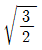
일 때 굴절각은?- 25°
- 30°
- 45°
- 55°
(정답률: 알수없음)
2. 소리의 세기가 10-4[W/m2]이고 공기의 임피이던스가 400rayls 이다. 이때의 음압레벨은?
- 60[dB]
- 70[dB]
- 80[dB]
- 90[dB]
(정답률: 알수없음)

3. 음압에 관한 다음 설명중 옳지 않은 것은?
- 음압은 입자속도에 비례한다.
- 음압은 음향임피던스의 2승에 비례한다.
- 음압은 매질의 밀도에 비례한다.
- 음압은 음의 전파속도에 비례한다.
(정답률: 알수없음)
4. 46 phon과 같은 크기를 갖는 sone은 얼마인가?
- 0.65
- 0.94
- 1.52
- 2.34
(정답률: 알수없음)
5. 소음을 600-1200Hz, 1200-2400Hz, 2400-4800Hz의 3개의 밴드로 분석한 음압레벨을 산술평균한 값은?
- PNC
- NC
- NRN
- SIL
(정답률: 알수없음)
6. 다음 설명중 옳지 않은 것은?
- 음의 대소는 섬모가 받는 자극의 크기에 따른다.
- 섬모는 기저막의 상층을 덮고 있다.
- 이소골의 진동은 원영창에 의해 림프액에 전달된다.
- 음의 고저는 자극을 받는 섬모의 위치에 따른다.
(정답률: 알수없음)
7. 우리 귀의 구성요소중 일종의 공명기로 음을 증폭하는 역할을 하는 것은?
- 이개(耳介)
- 외이도(外耳道)
- 고막
- 달팽이관
(정답률: 알수없음)
8. 다음은 청감보정회로에 관한 설명이다. 틀린 것은?
- A특성은 65phon의 등감곡선과 유사하며 소음 측정시 주로 사용된다
- C특성은 거의 평탄한 주파수 특성이므로 주파수 분석할 때 사용한다
- A특성 및 C특성으로 측정한 값의 차이로서 대략적인 주파수 성분을 알수있다
- 사람이 느끼는 청감에 유사한 모양으로 측정신호를 변환시키는 장치를 소음계에 내장시킨 것을 말한다.
(정답률: 알수없음)
9. 인간이 느낄수 있는 진동가속도의 범위로 가장 알맞는 것은?
- 10m/s2 ∼ 10000m/s2
- 1.0m/s2 ∼ 1000m/s2
- 0.1m/s2 ∼ 100m/s2
- 0.01m/s2 ∼ 10m/s2
(정답률: 알수없음)
10. 공장바닥과 같이 반자유공간에서의 지향계수는?
- 4
- 3
- 2
- 1
(정답률: 알수없음)
11. 정상적인 청력을 갖고 있는 사람이 음을 구별할 수 있는 파장 범위로 가장 알맞는 것은? (단, 20℃, 1기압 기준 )
- 약 1.0cm - 15m
- 약 1.7cm - 17m
- 약 2.0cm - 25m
- 약 3.4cm - 34m
(정답률: 알수없음)
12. 마스킹(masking)효과에 관한 설명으로 알맞지 않은 것은?
- 저음이 고음을 잘 마스킹 한다.
- 두음의 주파수가 서로 거의 같을 때는 맥동현상에 의해 마스킹 효과가 감소한다.
- 두음의 주파수가 비슷할 때는 마스킹 효과가 대단히 커진다.
- 주파수가 비슷한 두음원이 이동시 진행방향 쪽에서는 원래 음보다 고음이 되어 마스킹 효과가 감소한다.
(정답률: 알수없음)
13. 1/3octave 밴드의 하한 주파수를 f1 이라 하고 상한주파를 f2 라 할 때 이 밴드의 중심 주파수의 정의로서 맞는 것은?
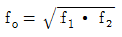
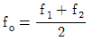
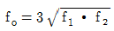
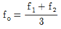
(정답률: 알수없음)
14. 음속은 매질에 따라 달라진다. 다음 4개의 매질을 음속이 작은것 부터 큰 순서로 배열한 것중 맞는 것은?
- 납 - 나무 - 유리 - 강철
- 유리 - 나무 - 납 - 강철
- 나무 - 유리 - 납 - 강철
- 유리 - 납 - 나무 - 강철
(정답률: 알수없음)
15. 정재파(standing wave)에 대한 설명으로 가장 옳은 것은?
- 확성기가 두군데에서 소리를 낼때 청취자에게 들리는 소리는 음선차에 시간차를 더하여 들리는 파형
- 둘 또는 그이상의 음파의 구조적 간섭에 의해 시간적으로 일정하게 음압의 최고와 최저가 반복되는 패턴의 파
- 음파의 진행방향으로 에너지를 전송하는 파
- 음의 출력이 기대치보다 적거나 원하는 만큼의 크기가 나오지 않으면 앰프의 출력단에 보강신호나 감하는 출력을 내었을 때 발생하는 파형
(정답률: 알수없음)
16. Snell 법칙과 관련이 있는 음의 성질은?
- 투과
- 굴절
- 회절
- 반사
(정답률: 알수없음)
17. 지향지수가 6dB 일 때 지향계수는?
- 4.60
- 4.35
- 3.98
- 3.56
(정답률: 알수없음)
18. 60phon의 소리는 50phon의 소리에 비해 몇 배 크게 들리는가?
- 2배
- 4배
- 8배
- 10배
(정답률: 알수없음)
19. 항공기 소음을 측정한 결과 85dB(A)였다면, 감각소음레벨(PNL)은 대략적으로 얼마인가?
- 98 PN-dB
- 95 PN-dB
- 88 PN-dB
- 85 PN-dB
(정답률: 알수없음)
20. 무지향성 점음원이 굳고 평탄한 지면에 있다. 이 음원의 표면으로부터 20m 떨어진 위치에서 SPL은 70dB이었다. 이 음원의 음향파워레벨은?
- 107dB
- 104dB
- 101dB
- 98dB
(정답률: 알수없음)
2과목: 소음방지기술
21. 방음벽에 관한 다음 설명중 옳지 않은 것은?
- 점음원의 경우 방음벽의 길이가 높이의 5배 이상이면 길이의 영향은 고려하지 않아도 된다
- 방음벽의 높이가 일정할 때 음원과 수음점의 중간 위치에 이를 세우는 경우가 가장 효과적이다
- 방음벽의 안쪽은 될 수 있는 한 흡음성으로 해서 반사음을 방지하는 것이 좋다
- 방음벽에 의한 현실적 최대 회절감쇠치는 점음원의 경우 24dB, 선음원의 경우 22dB 정도로 본다.
(정답률: 알수없음)
22. 흡음율을 측정하기 위한 방법으로 잔향실을 이용하는 경우가 있다. 잔향실의 특징을 맞게 설명한 것은?
- 벽면의 흡음률이 1에 가깝게 한다.
- 벽으로부터 반사파를 될 수 있는대로 작게하여 확산 음장을 얻도록 한다.
- 잔향실에는 실내에 충분한 확산을 얻을 수 있도록 확산판을 사용한다.
- 잔향실의 주요한 벽면은 평행이 되도록 하고 각 대각선의 길이의 비가 5이상이 되도록 한다.
(정답률: 알수없음)
23. 다음중 충격음과 가장 거리가 먼 것은?
- 총소리
- 제트엔진음
- 공사장 폭발음
- sonic boom
(정답률: 알수없음)
24. 팬소음을 옥타브대역별로 측정하였더니 중심주파수 2000Hz에서 가장 높은 음압레벨이 측정 되었다. 흡음형 소음기를 이용하여 소음대책을 수립하고자 한다면 경제적으로 가장 최적의 흡음재 두께는? (단, 표준상태 기준)
- 2.3cm 정도
- 3.3cm 정도
- 4.3cm 정도
- 5.3cm 정도
(정답률: 알수없음)
25. 평균 흡음률
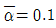
, 실내의 전표면적이 360m2의 중앙에 음향출력(PWL)이 80dB인 음원이 있다. 이 음원의 실내 평균음압도(확산음)은? (단, 확산음장 기준)- 60dB
- 65dB
- 70dB
- 75dB
(정답률: 알수없음)
26. 다음중 소음기(消音器)의 성능을 나타내는 용어가 아닌 것은?
- Noise rating number
- Insertion ℓ oss
- Attenuation
- Transmission ℓ oss
(정답률: 알수없음)
27. 소음제어를 위한 자재류의 기능을 잘못 설명한 것은?
- 차진재 : 구조적 진동과 진동 전달력 저감
- 차음재 : 음에너지 감쇠
- 소음기 : 기체의 비정상 흐름 상태에서 정상흐름으로 전환
- 흡음재 : 음에너지의 전환 - 음에너지가 적기 때문에 소량의 열에너지로 변환됨
(정답률: 알수없음)
28. 어느 시료의 흡음성능을 측정하기 위하여 정재파 관내법을 사용하였다. 1000Hz 순음인 sine파의 정재파비(S)가 1.7이었다면 이 흡음재의 흡음율(α)은?
- 0.693
- 0.752
- 0.865
- 0.933
(정답률: 알수없음)
29. 소음기(Silencer)의 성능을 표시하는 용어중, 소음원에 소음기를 부착하기 전과 후의 어떤 특정위치에서 측정한 음압레벨의 차와 그 측정 위치를 나타내는 것은?
- 감쇠치(慇L)
- 감음량(NR)
- 투과손실치(TL)
- 삽입손실치(IL)
(정답률: 알수없음)
30. 연결관과 팽창실의 단면적이 각각 A1, A2인 팽창형 소음기의 투과손실 TL은? (단, m = A2/A1, k= (2πf)/c, L= 팽창부 길이, f: 대상주파수, c:음속 )
- TL = 10 log [1+0.25(m-(1/m))2 sin2kL] dB
- TL = 10 log [1+4(m-(1/m)) sin2kL] dB
- TL = 10 log [1+16(m-(1/m2))sin2kL] dB
- TL = 10 log [1+4(m-(1/m)) sin kL] dB
(정답률: 알수없음)
31. 800Hz의 음파를 흡음닥트에 의해서 감음하고자 한다. 원통닥트의 내면에 흡음물을 부착했을 때의 지름을 40cm, 흡음율은 0.4의 것을 이용한다고 하고 이 흡음닥트에서 30dB의 감음을 얻기 위해서는 최소한 몇 m의 길이가 필요한가?
- 9m
- 10m
- 11m
- 12m
(정답률: 알수없음)
32. 공장 실내의 소음을 저감시키기 위하여 대책전의 실정수 R1= 50m2 을 대책후 실정수 R2= 200m2 으로 개선 하였다면 이때 이 공장에서의 실내흡음에 의한 대책전후의 소음저감량은 몇 dB인가?
- 3dB
- 6dB
- 9dB
- 12dB
(정답률: 알수없음)
33. 가로, 세로, 높이가 5m, 7m, 2m인 방의 벽, 바닥, 천장의 500 Hz 밴드에서의 흡음률이 각각 0.25, 0.⑤, 0.15일 때 500 Hz 음의 잔향시간은?
- 0.31 초
- 0.59 초
- 0.74 초
- 0.98 초
(정답률: 알수없음)
34. 사무실을 1000Hz에서 40dB의 투과손실을 갖는 칸막이벽으로 분리하고자 한다. 또한 칸막이벽에 동일주파수에서 20dB의 투과손실을 갖는 유리창을 벽면적의 10％크기로 설치하고자 한다. 1000Hz에서 총합투과손실은?
- 24dB
- 27dB
- 30dB
- 34dB
(정답률: 알수없음)
35. 비교적 큰 공장내부에 PWL이 100dB인 무지향성 소형음원이 있다. 이 음원은 공장 실내의 3면(벽 양면과 바닥)이 만나는 구석 바닥에 놓여져 가동되고 있다. 공장내부의 실정수R이 10m2 일때 음원으로부터 10m지점에서의 음압 레벨은?
- 87dB
- 89dB
- 92dB
- 96dB
(정답률: 알수없음)
36. 관이나 판 등으로 부터 소음이 방사될 때 이에 대한 소음 저감방법으로는 damping재를 부착한 후 흡음재를 부착하고 그 다음에 차음재를 설치하는 것이 훨씬 효과적이다. 이러한 방법을 무엇이라 하는가?
- 방음차단
- 방음절연
- 방음rocking
- 방음Lagging
(정답률: 알수없음)
37. 흡음재료의 부착에 관한 사항중 맞는 것은?
- 벽면에 부착할때 한곳에 집중하는 것보다 전체 내벽에 붙여야 흡음력을 감소시키고 반사음을 집중시킨다
- 다공질재료는 산란하기 쉬우므로 표면에 얇은 직물로 피복하는 것은 피하여야 한다.
- 실(室)의 모서리나 가장자리 부분에 흡음재를 부착 시키면 흡음효과가 좋아진다.
- 다공질 재료의 표면을 도장하면 저음역에서 흡음율이 높아진다.
(정답률: 알수없음)
38. 종과 횡의 등간격으로 구멍이 뚫린 다공판의 공명주파수 (fr)은 판의 두께(t), 구멍의 직경(d), 구멍의 간격(D), 배후 공기층두께(L) 및 개공율(P)에 따라 변화한다. fr을 크게 하고자 할 때 다음중 옳지 않은 것은?
- D를 작게 한다.
- L를 작게 한다.
- P를 작게 한다.
- t를 작게 한다.
(정답률: 알수없음)
39. 어떤 벽체에 음이 수직입사할때 이 벽체의 반사율이 0.3이었다. 이벽체의 투과손실(TL)은?
- 약 1.5 dB
- 약 2.0 dB
- 약 2.5 dB
- 약 3.0 dB
(정답률: 알수없음)
40. 어떤 흡음재에 대한 흡음율이 다음과 같았다. 이 흡음재에 대한 감음계수(NRC)는?
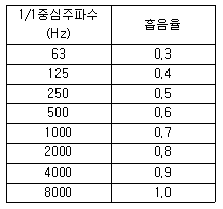
- 0.55
- 0.65
- 0.75
- 0.85
(정답률: 알수없음)
3과목: 소음진동 공정시험 기준
41. 다음중 등가소음도 계산식을 바르게 표현한 것은?
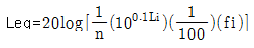
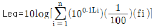
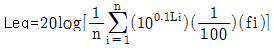
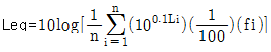
(정답률: 알수없음)
42. 발파소음의 측정소음도 설명 중 잘못된 것은?
- 발파소음은 순간치를 측정하는 것이므로 암소음보정이 필요없다
- 최고소음 고정용소음계를 사용할 때는 당해 지시치를 측정 소음도로 한다
- 소음도 기록기를 사용할 때에는 기록지상의 지시치의 최고치를 측정소음도로 한다
- 디지탈 소음 자동분석계를 사용할 때는 샘플 주기를 0.1초 이하로 놓고 측정한다
(정답률: 알수없음)
43. 철도소음측정의 샘플주기는 몇초 내외이고 몇시간 동안 연속 측정하여야 하는가?
- 5,1
- 1,5
- 2,2
- 1,1
(정답률: 알수없음)
44. 환경기준의 측정방법 중 측정점 선정방법으로 옳지 않은 것은?
- 도로변지역은 소음으로 인하여 문제를 일으킬 우려가 있는 장소로 한다.
- 일반지역은 당해지역의 소음을 대표할 수 있는 장소로 한다
- 도로변지역의 경우 측정점 반경 3.5m 이내에 장애물이 없는 곳을 택한다
- 도로변 지역의 경우 장애물이 있을 때에는 장애물로부터 도로 방향으로 1m 떨어진 지점을 택한다
(정답률: 알수없음)
45. 측정진동레벨이 65dB(V)이고 암진동이 54dB(V) 이었다면 대상진동 레벨은 얼마인가?
- 65 dB(V)
- 54 dB(V)
- 64 dB(V)
- 62 dB(V)
(정답률: 알수없음)
46. 환경기준의 측정방법중 도로변 지역의 소음측정시 설명이 잘못된 것은?
- 상시측정용 경우의 측정높이는 지면위 1.2-1.5m 이다.
- 건축물이 보도가 없는 도로변에 접해 있는 경우에는 도로단에서 측정한다.
- 고속도로 또는 자동차 전용도로의 경우 도로변 지역의 범위는 도로단으로부터 150m 이내로 한다.
- 일반적 도로변지역의 범위는 도로단으로부터 차선수 × 10m로 한다.
(정답률: 알수없음)
47. 소음계의 구조별 성능중 표준음 발생기의 발생음 오차는 몇 dB 이내이어야 하는가?
- ± 1dB 이내
- ± 2dB 이내
- ± 3dB 이내
- ± 4dB 이내
(정답률: 알수없음)
48. 배출허용기준(공장소음) 측정에 관한 설명중 알맞지 않은 것은?
- 측정소음도의 측정은 대상 배출시설의 소음발생기기를 가능한 한 최대출력으로 가동시킨 정상상태에서 측정한다.
- 소음도기록기가 없을 경우에는 소음계만으로 측정할 수 있다.
- KSC-1502에 정한 정밀소음계 또는 동등이상의 성능을 가진 소음계이어야 한다.
- 소음계의 마이크로폰은 주소음원 방향으로 하여야한다.
(정답률: 알수없음)
49. 소음진동 공정시험방법에서 규정하고 있는 소음계의 성능 중 자동차소음을 제외한 일반소음의 측정가능 범위는?
- 20dB - 120dB이상
- 25dB - 125dB이상
- 30dB - 130dB이상
- 35dB - 130dB이상
(정답률: 알수없음)
50. 다음은 진동레벨의 사용에 관한 사항이다. 틀린 항은?
- 진동픽업의 연결선은 지표면에 일직선으로 설치한다.
- 감각보정회로는 수직특성을 사용한다.
- 동특성은 빠름을 사용한다.
- 진동레벨계는 매회 교정한다.
(정답률: 알수없음)
51. 낮시간대에 환경소음 측정시 측정간격을 바르게 설명한 것은?
- 30분이상 간격으로 8회이상
- 1시간이상 간격으로 8회이상
- 1시간이상 간격으로 4회이상
- 2시간이상 간격으로 4회이상
(정답률: 알수없음)
52. 다음 중 마이크로폰이 갖추어야 할 조건과 가장 거리가 먼 것은?
- 무지향성
- 높은 임피던스
- 안정성
- 평탄특성
(정답률: 알수없음)
53. "소음계의 교정장치는 ( )dB(A) 이상의 환경에서도 교정이 가능하여야 한다" ( )안에 알맞는 것은?
- 60
- 80
- 100
- 120
(정답률: 알수없음)
54. 소음계의 사용기준에 있어서 지시계기의 눈금오차는 얼마이내이어야 하는가?
- 0.1 dB 이내
- 0.3 dB 이내
- 0.5 dB 이내
- 1 dB 이내
(정답률: 알수없음)
55. 다음 그림은 진동레벨계의 구성을 보인것이다. 그림 중 5에 해당하는 것은?
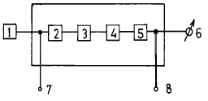
- 레벨범위 변환기
- 증폭기
- 동특성 조절기
- 교정회로
(정답률: 알수없음)
56. 항공기 소음 측정시 설명이 잘못된 것은?
- 원칙적으로 연속 7일간 측정한다
- 청감회로는 A특성으로 한다
- 동특성은 빠름(fast)으로 한다
- 측정자는 비행경로에 수직하게 위치하여야 한다.
(정답률: 알수없음)
57. 어느 공장에서 적절한 측정 시각에 4개 측정지점수를 선정하여 소음을 측정한 결과 50dB(A), 55dB(A), 60dB(A), 65dB(A)의 소음도가 측정되었을 경우 당해 공장의 측정 소음도는?
- 55dB(A)
- 60dB(A)
- 65dB(A)
- 70dB(A)
(정답률: 알수없음)
58. 진동레벨계의 구성기기인 진동픽업의 횡감도는 규정 주파수에서 수감축 감도에 대하여 몇 dB이상의 차이가 있어야 하는가?
- 5dB
- 10dB
- 15dB
- 20dB
(정답률: 알수없음)
59. 1일 동안의 평균 최고 소음도가 89dB(A)이고 N1, N2, N3, N4항공기 통과 횟수가 각각 50, 300, 40, 10대 일 때 WECPNL은?
- 87
- 89
- 92
- 95
(정답률: 알수없음)
60. 발파소음 측정시 발파횟수는 작업일지 또는 폭약 사용신고서 등을 참조하여 몇 일간의 평균값을 계산한 각 시간대별 평균 발파 횟수로 갈음하는가?
- 1일간
- 3일간
- 5일간
- 7일간
(정답률: 알수없음)
4과목: 진동방지기술
61. X(t) = xo cos wnt +Vo/wn sin wnt의 자유진동 진폭의 크기는?
- Xo
- Vo/Wn
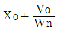
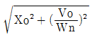
(정답률: 알수없음)
62. 진동작업자가 100dB에 20분, 95dB에 50분, 90dB에 2시간의 간헐적인 진동에 폭로되는 경우 작업자가 83dB에서의 전(全)등가폭로시간은? (단, 83dB 1일 허용시간은 24h, 90dB, 95dB, 100dB의 허용시간은 각각 8h, 4h, 1h이다.)
- 8h
- 13h
- 19h
- 22h
(정답률: 알수없음)
63. 기계의 가진주파수가 100Hz일때 정적변위 0.2cm의 스프링을 쓰면 진동전달율은 대략 얼마인가?
- 1/60
- 1/70
- 1/80
- 1/90
(정답률: 알수없음)
64. 금속자체에 진동 흡수력을 갖는 제진합금의 분류 중 흑연주철, Al-Zn합금(단 40-78%의 Zn을 포함)으로 이루어진 것은?
- 강자성형
- 쌍전형
- 전위형
- 복합형
(정답률: 알수없음)
65. 감쇠가 없는 강제진동에서 전달율을 0.08로 하려고 한다. 진동수비 W/Wn의 값은?
- 1.67
- 3.67
- 5.67
- 7.67
(정답률: 알수없음)
66. 방진의 원리는 질량과 스프링 계수를 이용하여 어떻게하는 것이 경제적으로 가장 좋은가?
- 고유진동수를 일정하게 유지
- 고유진동수를 증대
- 고유진동수를 감소
- 고유진동수를 1이 되도록
(정답률: 알수없음)
67. 4ton 선반의 네 귀퉁이를 코일스프링으로 방진하였더니 정적처짐이 2cm 발생하였다면 이 코일 스프링의 스프링 정수 K는?
- 400 kg/cm
- 500 kg/cm
- 1,000 kg/cm
- 2,000 kg/cm
(정답률: 알수없음)
68. 그림의 진동계가 강제 진동을 하고 있으며 그 진폭이 X일 때 기초에 전달되는 힘의 크기는 다음 중 어느것인가?
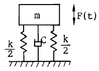
- kX+cwX
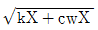
- kX2+cwX2
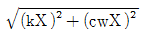
(정답률: 알수없음)
69. 다음 그림과 같은 계가 진동할때 주기는?
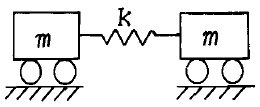
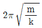
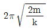
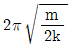
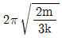
(정답률: 알수없음)
70. 중량이 34N 이고, 스프링정수가 20.6N/cm일 때 이 계의 고유 진동수는?
- 1.9[Hz]
- 2.9[Hz]
- 3.9[Hz]
- 4.9[Hz]
(정답률: 알수없음)
71. 특성 임피던스가 39×106kg/m2.s 인 금속관의 프랜지 접속부에 특성 임피던스가 3×104kg/m2.s인 고무를 넣어 제진(진동절연)할때의 진동감쇠량은?
- 19dB
- 22dB
- 25dB
- 29dB
(정답률: 알수없음)
72. 감쇠가 계에서 갖는 기능에 대해 설명한 것이 아닌 것은?
- 기초로의 진동에너지 전달의 감소
- 충격시 진동이나 자유진동을 감소시킴
- 공진시 진동진폭의 감소
- 가진력의 지향성 감소
(정답률: 알수없음)
73. 부족감쇠(under damping)가 되도록 감쇠재료를 선택 했을 때 그 진동계의 감쇠비(ζ)는 다음중 어느 경우의 값을 갖는가?
- 0이다.
- 1이다.
- 1보다 크다.
- 1보다 작다.
(정답률: 알수없음)
74. 주기가 0.3초이고 가속도 진폭이 0.2m/s2인 진동의 속도 진폭은 몇 kine인가?
- 2kine
- 1kine
- 0.5kine
- 0.25kine
(정답률: 알수없음)
75. 방진재료에는 공기스프링류, 금속스프링류, 방진고무류등을 주로 많이 사용하고 있다. 공기스프링은 고유진동수가 몇 Hz이하를 요구할 때 주로 사용하는가?
- 10Hz이하
- 200Hz이하
- 500Hz이하
- 1000Hz이하
(정답률: 알수없음)
76. 주파수 16[Hz], 진동속도 진폭의 최대치 0.0001[m/sec]인 정현진동에서 진동가속도의 기준치를 10-3[cm/s2]으로 할 때 진동가속도 레벨은?
- 9 [dB]
- 19 [dB]
- 28 [dB]
- 57 [dB]
(정답률: 알수없음)
77. 방진고무등의 동적 스프링 상수를 Kd, 정적 스프링 상수를 Ks라 하면 Kd와 Ks의 관계로 가장 알맞는 것은?
- Kd = Ks
- Kd ＜ Ks
- Kd ＞ Ks
- 일정하지 않음
(정답률: 알수없음)
78. 방진재료로 사용되는 금속 스프링의 장점이 아닌 것은?
- 뒤틀리거나 오무라들지 않는다.
- 공진시에 전달률이 매우 작다.
- 최대변위가 허용된다.
- 저주파 차진에 좋다.
(정답률: 알수없음)
79. '계수 여진 진동'에 관한 설명으로 틀린 것은?
- 대표적인 예는 그네로서 그네가 1행정하는 동안 사람 몸의 자세는 2행정하게 된다.
- 가진력의 주파수와 계의 고유진동수(계수 여진 진동 주파수)가 거의 같을 때 크게 진동한다.
- 근본적인 대책은 질량 및 스프링 특성의 시간적 변동을 없애는 것이다.
- 회전하는 편평축의 진동, 왕복운동기계의 크랭크축계의 진동도 계수 여진 진동에 속한다.
(정답률: 알수없음)
80. 진동의 물리량 표시방법과 가장 거리가 먼 것은?
- 가속도
- 속도
- 각가속도
- 변위
(정답률: 알수없음)
5과목: 소음진동 관계 법규
81. 환경관리인의 교육기간기준으로 적절한 것은?
- 10일 이내
- 7일 이내
- 5일 이내
- 3일이내
(정답률: 알수없음)
82. 현재 철도 진동의 한도는? (단, 주간, 주거지역, 단위 dB(V) 기준임)
- 50
- 55
- 60
- 65
(정답률: 알수없음)
83. 공장소음진동배출허용기준의 대상소음도에서 지역별 보정치로 보정한 평가소음도가 50dB(A)이하여야 한다. 지역별 보정치로 틀린 것은?
- 녹지지역 보정치 : 0
- 준주거지역 보정치 : -5
- 상업지역 보정치 : -10
- 일반공업지역 보정치 : -20
(정답률: 알수없음)
84. 배출허용기준을 초과한 경우에 3차 행정처분기준으로 적절한 것은?
- 개선명령
- 조업정지
- 사용중지명령
- 폐쇄
(정답률: 알수없음)
85. 2002년 1월 1일 이후에 제작되는 자동차중 경자동차의 배기소음허용기준과 경적소음허용기준은?
- 배기소음 100dB(A) 이하, 경적소음 110dB(C) 이하
- 배기소음 1⑤dB(A) 이하, 경적소음 110dB(C) 이하
- 배기소음 103dB(A) 이하, 경적소음 112dB(C) 이하
- 배기소음 1⑤dB(A) 이하, 경적소음 112dB(C) 이하
(정답률: 알수없음)
86. 환경관리인 자격기준중 소음, 진동기사 2급을 대체할 수 없는 자는? (단, 2급은 산업기사와 같음)
- 금속분야 2급 이상 기사로서 환경분야에서 2년 이상 종사한 자
- 전기분야 2급 이상 기사로서 환경분야에서 2년 이상 종사한 자
- 대기환경 2급 이상 기사로서 환경분야에서 2년 이상 종사한 자
- 수질환경 2급 이상 기사로서 환경분야에서 2년 이상 종사한 자
(정답률: 알수없음)
87. 소음배출시설(마력기준시설 및 기계,기구)의 기준으로 틀린 것은?
- 10마력 이상의 송풍기
- 10마력 이상의 금속절단기
- 10마력 이상의 탈사기
- 10마력 이상의 변속기
(정답률: 알수없음)
88. 다음 벌칙중 3년 이하의 징역 또는 1천 500만원 이하의 벌금에 해당되지 않는 것은?
- 제작차 소음허용기준에 적합하지 않도록 자동차를 제작한 자
- 사용중지 또는 폐쇄명령을 위반한 자
- 인증을 받지 아니하고 자동차를 제작한 자
- 허가를 받지 아니하고 배출시설을 설치한 자
(정답률: 알수없음)
89. 특정공사의 사전신고대상에 포함되는 기계 또는 장비는?
- 휴대용 브레이커
- 고정식 공기압축기
- 로우더
- 압입식 항타항발기
(정답률: 알수없음)
90. 자동차의 사용정지명령을 위반한 자에 대한 벌칙으로 적절한 것은?
- 1년이하의 징역 또는 500만원이하의 벌금
- 6월이하의 징역 또는 200만원이하의 벌금
- 3월이하의 징역 또는 100만원이하의 벌금
- 100만원이하의 벌금
(정답률: 알수없음)
91. 다음 용어의 정의 중 옳지 않는 것은?
- 환경이란 자연환경과 생활환경을 말한다.
- 자연환경이란 지하,지표 및 지상의 모든 생물을 포함 한 비생물적인 것을 제외한 자연의 상태를 말한다.
- 생활환경이란 대기, 물, 폐기물, 소음, 진동, 악취 일조 등 사람의 일상환경과 관계되는 환경을 말한다.
- 환경오염이란 사업활동 기타 사람의 활동에 따라 발생되는 대기오염,수질오염,토양오염,해양오염, 방사능오염,소음진동,악취 등으로 사람의 건강이나 환경에 피해를 주는 상태를 말한다.
(정답률: 알수없음)
92. 배출시설의 가동개시신고를 한 사업자는 가동개시일부터 몇일이내에 배출허용기준에 적합하도록 배출시설 및 방지 시설을 정상운영 하여야 하는가?
- 10일
- 15일
- 20일
- 30일
(정답률: 알수없음)
93. 공장소음 배출허용기준의 보정을 위한 항목 중 언급된 관련시간대로 적절한 것은?
- 낮은 8시간, 저녁은 4시간, 밤은 3시간
- 낮은 8시간, 저녁은 4시간, 밤은 2시간
- 낮은 8시간, 저녁은 6시간, 밤은 3시간
- 낮은 8시간, 저녁은 6시간, 밤은 2시간
(정답률: 알수없음)
94. 생활소음· 진동을 발생하는 특정공사를 시행하고자 하는 자가 제출하여야 하는 특정공사사전신고서에 첨부되어야 하는 구비서류가 아닌 것은?
- 특정공사의 개요
- 피해예상지역 주민동의서
- 공사장 위치도
- 소음·진동저감대책
(정답률: 알수없음)
95. 제작차 소음허용기준의 적합에 대한 인증을 변경하고자하는 자가 제출해야 할 자료로서 알맞지 않는 것은?
- 자동차 제원 명세서
- 동일차종임을 입증할 수 있는 서류
- 인증내용변경 전,후의 소음변화 검사서
- 변경된 인증내용에 대한 설명서
(정답률: 알수없음)
96. 과태료의 징수절차는 누구의 령으로 정하는가?
- 법률
- 지방자치단체장령
- 대통령령
- 환경부령
(정답률: 알수없음)
97. 측정망설치에 관한 설명 중 적절치 못한 것은?
- 측정망설치계획의 고시는 최초로 측정소를 설치하게 되는 날의 3월 이전에 하여야 한다.
- 환경부장관이 측정망 설치계획을 결정, 고시하고자 하는 경우에는 그 설치위치 등에 관하여 미리 관할 유역환경청장 또는 지방환경청장의 의견을 들어야 한다.
- 측정망 설치계획에는 측정망의 설치시기가 포함되어 야 한다.
- 측정망 설치계획에는 측정소를 설치할 토지 또는건축물 위치 및 면적이 포함되어야 한다.
(정답률: 알수없음)
98. 교육기관의 장이 환경부장관으로 부터 승인을 얻기 위해 제출하는 교육계획 내용에 포함될 내용과 가장 거리가 먼 것은?
- 교육의 기본방향
- 교육대상자 선발기준 및 선발계획
- 교재편찬계획
- 교육방법평가계획
(정답률: 알수없음)
99. 소음·진동규제법상 용어의 정의에 적합하지 않는 것은?
- '교통기관'이라 함은 기차, 자동차, 전차, 도로 및 철도 등을 말한다. 다만, 항공기 및 선박은 제외한다
- '진동'이라 함은 기계, 기구, 시설 기타 물체의 사용으로 인하여 발생하는 강한 흔들림을 말한다.
- '방음시설'이라 함은 소음, 진동 배출시설로부터 발생하는 소음을 제거하거나 감소시키는 시설을 말한다.
- '소음진동배출시설'이라 함은 소음,진동을 발생하는 공장의 기계, 기구 시설 기타 물체로서 환경부령으로 정하는 것을 말한다.
(정답률: 알수없음)
100. 환경관리인의 개임신고 규정으로 적절한 것은?
- 개임한 날부터 7일이내
- 개임한 날부터 10일이내
- 개임한 날부터 15일이내
- 개임한 날부터 30일이내
(정답률: 알수없음)
Lp = 20log10(p/p0)
여기서 p는 소리의 압력이고, p0는 기준 압력이다. 기준 압력은 보통 20μPa(마이크로파스칼)로 정해진다.
임피던스는 압력과 속도의 비율로 정의되므로, 다음과 같이 압력과 속도를 구할 수 있다.
p = √(ZI)
v = p/Z
여기서 Z는 임피던스, I는 소리의 강도이다.
따라서, 소리의 압력을 구하기 위해서는 다음과 같이 계산할 수 있다.
p = √(ZI) = √(400 x 10-4) = 2 x 10-2 Pa
이제 이 값을 이용하여 음압레벨을 계산할 수 있다.
Lp = 20log10(p/p0) = 20log10(2 x 10-2/20 x 10-6) = 80[dB]
따라서, 정답은 "80[dB]"이다.